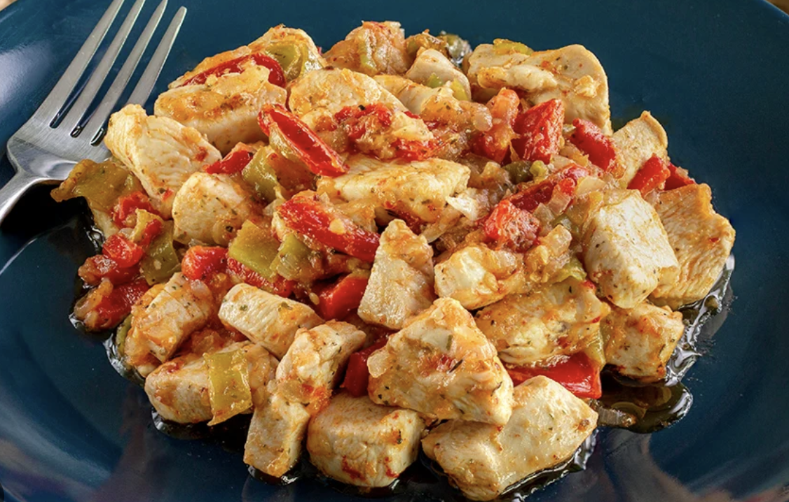
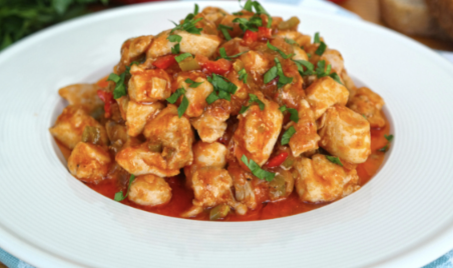

kremalı mantar çorbası TARİFİ


kremalı mantar çorbası Tarifi İçin Malzemeler
- Yarım kg tavuk göğsü
- 2 yemek kaşığı sıvı yağ
- 1 tatlı kaşığı domates salçası
- 2 adet yeşil biber
- 1 adet kırmızı biber
- 1 adet soğan
- 2 diş sarımsak
- 2 adet domates
- Karabiber
- Pul biber
- Tuz
- 1 su bardağı su
yapılışı:
- Tavuk etini kuşbaşı doğrayın.
- Soğanları yemeklik, biberleri julyen doğrayın, domatesleri de küp küp doğrayın.
- Kısık ateşte tavukları arada karıştırarak kavurun.
- Suyunu biraz çektikten sonra soğanları ve ince kesilmiş sarımsağı ekleyin.
- 1-2 dk kavurduktan sonra biberleri ilave edin.
- Biberler de sotelenince domatesi, salçayı, baharatları ve tuzu ekleyip pişirmeye devam edin.
- Son olarak 1 bardak suyu ekleyin ve etler pişene kadar kapağı kapalı bir şekilde pişirin.